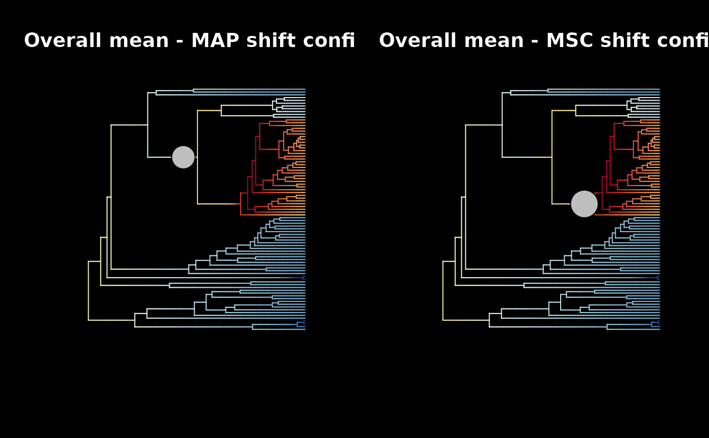
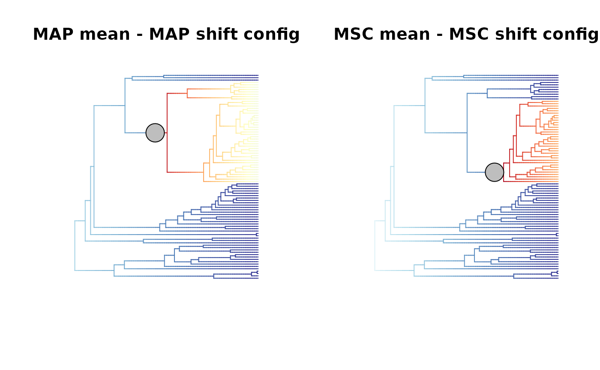
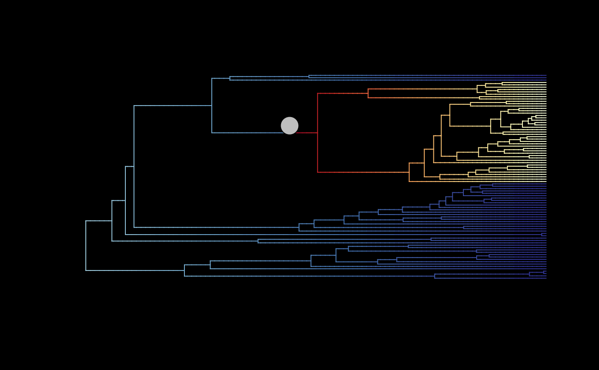
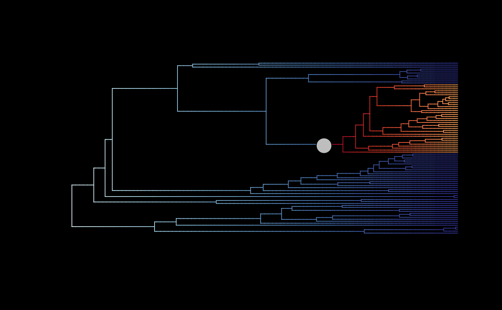

Plot diversification rates and regime shifts from BAMM on phylogeny
Source:R/plot_BAMM_rates.R
plot_BAMM_rates.RdPlot on a time-calibrated phylogeny the evolution of diversification rates and
the location of regime shifts estimated from a BAMM (Bayesian Analysis of Macroevolutionary Mixtures).
Each branch is colored accroding to the estimated rates of speciation, extinction, or net diversification
stored in an object of class bammdata. Rates can vary along time, thus colors evolved along individual branches.
This function is a wrapper of original functions from the R package BAMMtools:
Step 1: Use
BAMMtools::plot.bammdata()to map rates on the phylogeny.Step 2: Add the location of regime shifts with
BAMMtools::addBAMMshifts()(ifadd_regime_shifts = TRUE).
Usage
plot_BAMM_rates(
BAMM_object,
rate_type = "net_diversification",
method = "phylogram",
add_regime_shifts = TRUE,
configuration_type = "MAP",
sample_index = 1,
adjust_size_to_prob = TRUE,
regimes_fill = "grey",
regimes_size = 1,
regimes_pch = 21,
regimes_border_col = "black",
regimes_border_width = 1,
...,
display_plot = TRUE,
PDF_file_path = NULL
)Arguments
- BAMM_object
Object of class
"bammdata", typically generated withprepare_diversification_data(), that contains a phylogenetic tree and associated diversification rate mapping across selected posterior samples. It works also forBAMM_objectupdated for a specificfocal_timeusingupdate_rates_and_regimes_for_focal_time(), or the deepSTRAPP workflow with run_deepSTRAPP_for_focal_time andrun_deepSTRAPP_over_time().- rate_type
A character string specifying the type of diversification rates to plot. Must be one of 'speciation', 'extinction' or 'net_diversification' (default).
- method
A character string indicating the method for plotting the phylogenetic tree.
method = "phylogram"(default) plots the phylogenetic tree using rectangular coordinates.method = "polar"plots the phylogenetic tree using polar coordinates.
- add_regime_shifts
Logical. Whether to add the location of regime shifts on the phylogeny (Step 2). Default is
TRUE.- configuration_type
A character string specifying how to select the location of regime shifts across posterior samples.
configuration_type = "MAP": Use the average locations recorded in posterior samples with the Maximum A Posteriori probability (MAP) configuration. This regime shift configuration is the most frequent configuration among the posterior samples (SeeBAMMtools::getBestShiftConfiguration()). This is the default option.configuration_type = "MSC": Use the average locations recorded in posterior samples with the Maximum Shift Credibility (MSC) configuration. This regime shift configuration has the highest product of marginal probabilities across branches (SeeBAMMtools::maximumShiftCredibility()).configuration_type = "index": Use the configuration of a unique posterior sample those index is provided insample_index.
- sample_index
Integer. Index of the posterior samples to use to plot the location of regime shifts. Used only if
configuration_type = index. Default =1.- adjust_size_to_prob
Logical. Whether to scale the size of the symbols showing the location of regime shifts according to the marginal shift probability of the shift happening on each location/branch. This will only works if there is an
$MSP_treeelement summarizing the marginal shift probabilities across branches in theBAMM_object. Default isTRUE.- regimes_fill
Character string. Set the color of the background of the symbols showing the location of regime shifts. Equivalent to the
bgargument inBAMMtools::addBAMMshifts(). Default is"grey".- regimes_size
Numerical. Set the size of the symbols showing the location of regime shifts. Equivalent to the
cexargument inBAMMtools::addBAMMshifts(). Default is1.- regimes_pch
Integer. Set the shape of the symbols showing the location of regime shifts. Equivalent to the
pchargument inBAMMtools::addBAMMshifts(). Default is21.- regimes_border_col
Character string. Set the color of the border of the symbols showing the location of regime shifts. Equivalent to the
colargument inBAMMtools::addBAMMshifts(). Default is"black".- regimes_border_width
Numerical. Set the width of the border of the symbols showing the location of regime shifts. Equivalent to the
lwdargument inBAMMtools::addBAMMshifts(). Default is1.- ...
Additional graphical arguments to pass down to
BAMMtools::plot.bammdata(),BAMMtools::addBAMMshifts(), andpar().- display_plot
Logical. Whether to display the plot generated in the R console. Default is
TRUE.- PDF_file_path
Character string. If provided, the plot will be saved in a PDF file following the path provided here. The path must end with '.pdf'.
Value
The function returns (invisibly) a list with three three elements similarly to BAMMtools::plot.bammdata().
$coords: A matrix of plot coordinates. Rows correspond to branches. Columns 1-2 are starting (x,y) coordinates of each branch and columns 3-4 are ending (x,y) coordinates of each branch. If method = "polar" a fifth column gives the angle(in radians) of each branch.$colorbreaks: A vector of percentiles used to group macroevolutionary rates into color bins.$colordens: A matrix of the kernel density estimates (column 2) of evolutionary rates (column 1) and the color (column 3) corresponding to each rate value.
Details
The main input BAMM_object is the typical output of prepare_diversification_data().
It provides information on rates and regimes shifts across the posterior samples of a BAMM.
$MAP_BAMM_object and $MSC_BAMM_object elements are required to plot regime shift locations following the
"MAP" or "MSC" configuration_type respectively.
A $MSP_tree element is required to scale the size of the symbols showing the location of regime shifts according marginal shift probabilities.
(If adjust_size_to_prob = TRUE).
The default option to display regime shift is to use the average locations from the posterior samples with the Maximum A Posteriori probability (MAP) configuration.
However, sometimes, multiple configurations have similarly high frequency in the posterior samples (See BAMMtools::credibleShiftSet().
An alternative is to use the average locations from posterior samples with the Maximum Shift Credibility (MSC) configuration instead.
This regime shift configuration has the highest product of marginal probabilities across branches where a shift is estimated.
It may differ from the MAP configuration. (See BAMMtools::maximumShiftCredibility()).
See also
Initial functions in BAMMtools: BAMMtools::plot.bammdata() BAMMtools::addBAMMshifts()
Associated functions in deepSTRAPP: prepare_diversification_data() update_rates_and_regimes_for_focal_time() run_deepSTRAPP_for_focal_time run_deepSTRAPP_over_time()
Examples
# Load BAMM output
data(whale_BAMM_object, package = "deepSTRAPP")
## Plot overall mean rates with MAP configuration for regime shifts
# (rates are averaged only all posterior samples)
plot_BAMM_rates(whale_BAMM_object, add_regime_shifts = TRUE,
configuration_type = "MAP", bg = "black",
regimes_size = 3)

## Plot overall mean rates with MSC configuration for regime shifts
# (rates are averaged only all posterior samples)
plot_BAMM_rates(whale_BAMM_object, add_regime_shifts = TRUE,
configuration_type = "MSC", bg = "black",
regimes_size = 3)

## Plot mean MAP rates with regime shifts
# (rates are averaged only across MAP samples)
plot_BAMM_rates(whale_BAMM_object$MAP_BAMM_object, add_regime_shifts = TRUE,
configuration_type = "index",
# Set to index to use the regime shift data from the '$MAP_BAMM_object'
regimes_size = 3, bg = "black")

## Plot mean MSC rates (rates averaged only across MSC samples) with regime shifts
# (rates averaged only across MSC samples)
plot_BAMM_rates(whale_BAMM_object$MSC_BAMM_object, add_regime_shifts = TRUE,
configuration_type = "index",
# Set to index to use the regime shift data from the '$MSC_BAMM_object'
regimes_size = 3, bg = "black")
